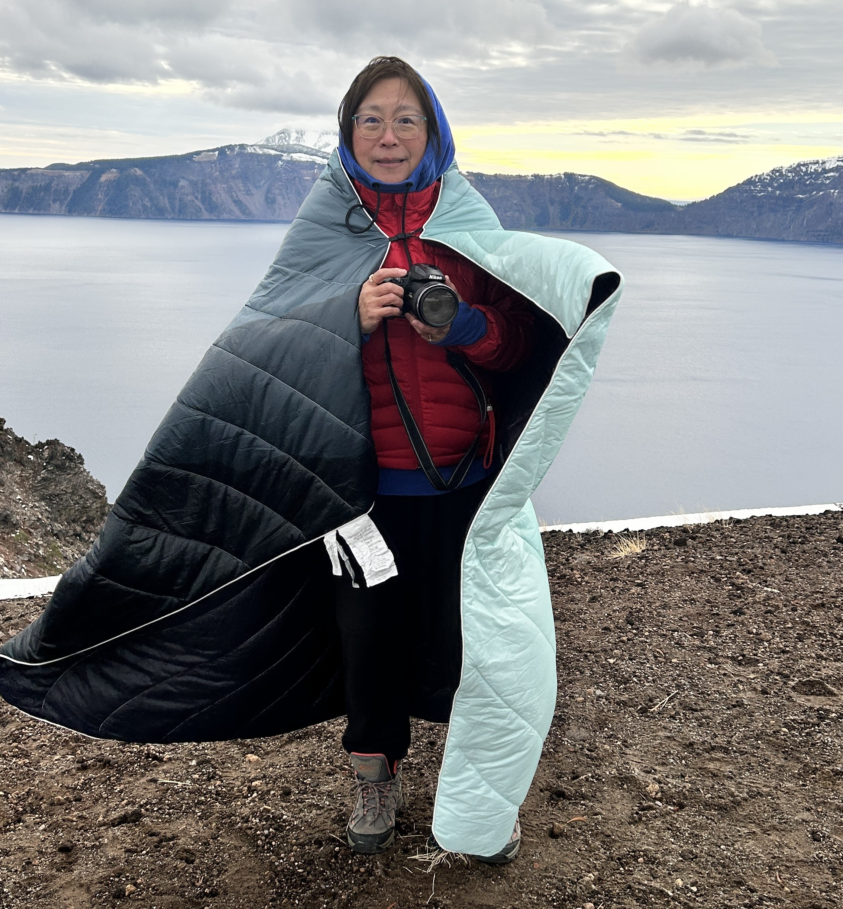

Crater Lake, Oregon
日环食
这个周末我们去Oregon 看日环食。我从六月开始就在准备，根据我们看日全食的经验，一定要去能看到100%的地方，99%的地方看到的感觉都不一样的。这次100%的地方距离比较远，大概九个小时的车程吧，我就开始找住的地方，发现好多预定的，这个日环食的周未变成了抢手时间！我赶紧订好了住的地方！六月份就订好了！
这个周六早上9:16-9:20是日环食的时间，我五点钟就起来了😳，到了Crater Lake后发现有很多人，都是来看日环食的。那里很冷，零度（华氏34），风还很大，我就把好多衣服毯子都用上啦，像一个蚕宝宝，老蚕宝宝吧😊

×